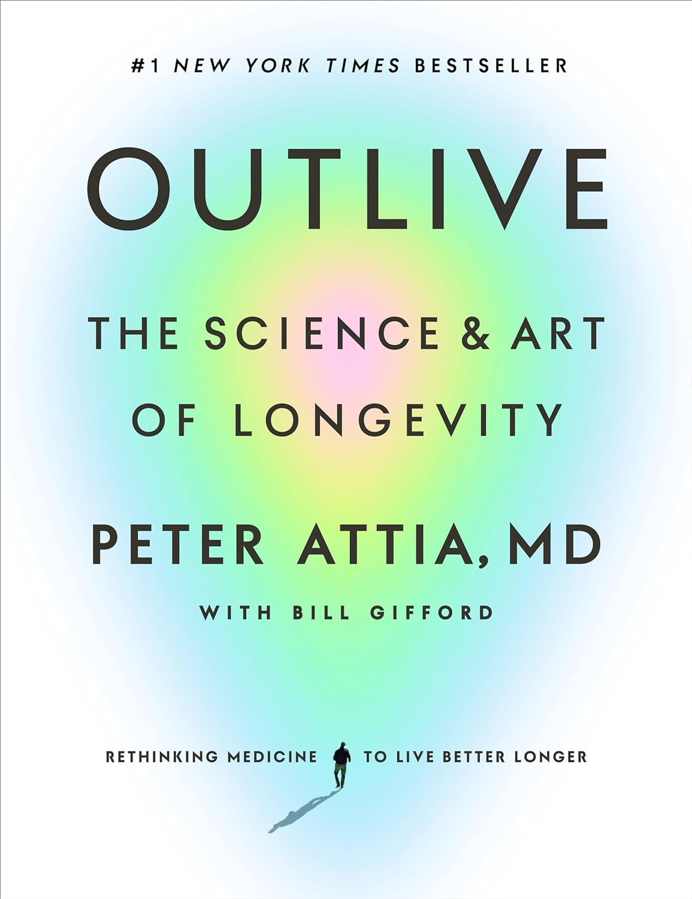
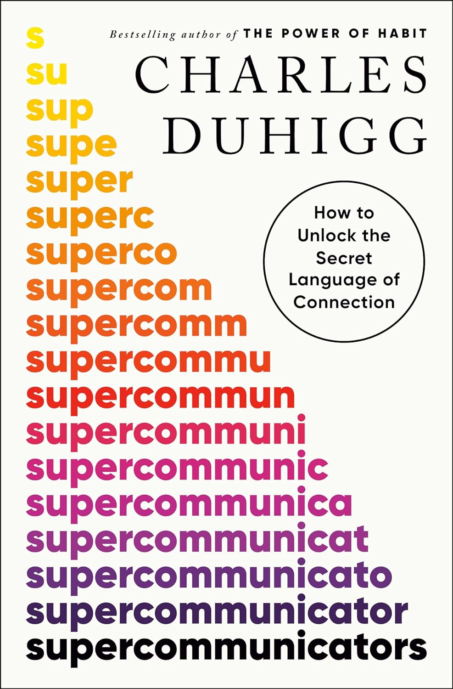
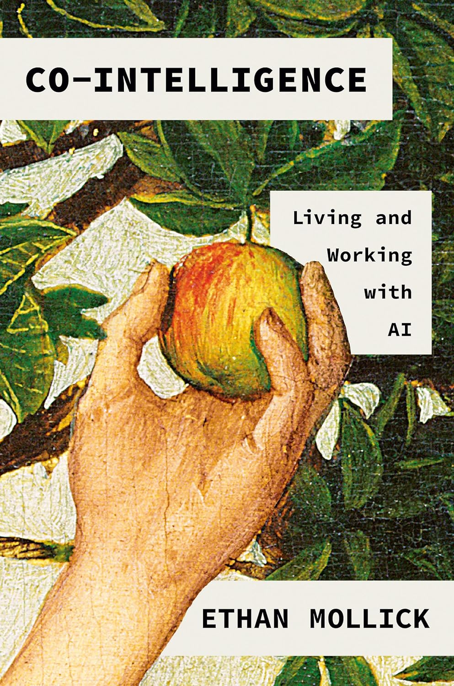

⭐⭐⭐⭐⭐ |
||
I liked the exploration of the brothers' relationship and how it influenced their music. However, I felt that some of the conflicts were oversimplified, and I really wish the book delved into the bands later years with Sammy Hagar as lead singer.
Overall, "Brothers" is a solid read that offers a good mix of personal stories and musical history. It provides a nostalgic look back at the rock era and the Van Halen legacy. It offers great lessons on teamwork, perseverance, and the creative process.
 ⭐⭐⭐ |
||
From my perspective, the strength of "Atomic Habits" lies in its actionable strategies. Clear's emphasis on the importance of environment and systems over sheer willpower is particularly relevant in the tech industry, where creating the right conditions can significantly impact productivity and innovation. The book's framework for habit stacking and the idea of making habits obvious, attractive, easy, and satisfying are principles that can be directly applied to both personal and team workflows.
Overall, "Atomic Habits" is a solid read that offers practical advice for anyone looking to improve their habits. It provides a good foundation for understanding how small changes can lead to significant results over time. However, the book might feel a bit simplistic and repetitive at times.
|  ⭐⭐⭐⭐⭐ |
||
The book is able translate complex scientific concepts into practical advice. . I appreciated how Dr. Attia integrates cutting-edge research with real-world applications.
The depth of information is impressive, but at times, it felt overwhelming. Nonetheless, I really loved this book and the valuable insights that it provided. My wife and I like the book so much we bought copies for all our neighbors as Christmas gifts.
|  ⭐⭐⭐⭐ |
||
The emphasis of book is on importance of empathy and active listening. In the fast-paced world of AI and technology, it's easy to overlook these softer skills, but "Supercommunicators" effectively highlights how they can lead to more productive and meaningful interactions. The practical tips and strategies offered are not only applicable in professional settings but also in personal relationships, making the book a well-rounded read.
While I appreciated the depth of content and the actionable advice provided, I felt that some sections could have been more concise. There were moments where the narrative felt a bit repetitive, which slightly detracted from the overall impact. Nonetheless, I would highly recommend it to anyone in a leadership position or those aspiring to enhance their communication skills.
 ⭐⭐⭐⭐⭐ |
||
There is a detailed exploration of Musk's leadership style and his approach to problem-solving. Isaacson doesn't shy away from highlighting ways in which those who worked for him found him to be capricious, difficult, or unfair.
The book is an engaging and informative read that provides both positive and negative lessons for anyone in the tech industry.
 ⭐⭐⭐⭐ |
||
The book is able to contextualize complex technologies in a way that is both accessible and engaging. As someone deeply involved in AI, I appreciated the detailed exploration of how AI is not just evolving but also integrating with other technologies to create exponential growth. The authors' use of real-world examples and case studies helps to illustrate the practical implications of these advancements, making it easier to envision the future they describe.
The book could have benefited from a more balanced discussion on the potential risks and the importance of responsible innovation. Nonetheless, "The Future Is Faster Than You Think" is a compelling read that offers valuable insights into the future of technology.
 ⭐⭐⭐⭐⭐ |
||
From my vantage point in the AI industry, I found "Dark Wire" to be incredibly relevant and thought-provoking. The book highlights the ongoing battle between privacy advocates and law enforcement. The book's detailed case studies and real-world examples underscore the importance of balancing innovation with ethical responsibility.
I found this book to be both enlightening, inspiring, as well as providing deep incite into criminal affairs. This book would definitely make for a great movie and I heard one is indeed being developed.
|  ⭐⭐⭐ |
||
One of the strengths of the book is its emphasis on the ethical considerations and societal impacts of AI. As someone deeply involved in AI development, I appreciated the author's efforts to provoke thought on these critical issues. The discussions on transparency, accountability, and the need for robust ethical frameworks resonated with my own experiences at Microsoft. However, I would have liked to see more concrete strategies and actionable insights on how to implement these principles in real-world scenarios.
Despite its shortcomings, it serves as a good starting point for discussions on how we can harness AI's potential while navigating its complexities.
 ⭐⭐⭐⭐⭐ |
||
Alvin has insightful discussion on the convergence of AI and the metaverse. He skillfully explains complex concepts in an accessible manner, making it easy for readers to grasp the profound implications of these technologies. As someone deeply involved in AI, I found the analysis both accurate and inspiring. The book also includes a personal touch, with a brief mention of my work at Microsoft and a nostalgic photo of us in our lab during graduation, which added a special layer of connection for me.
Overall, "Our Next Reality" is a thought-provoking and enlightening read that offers a glimpse into the future of AI and the metaverse. Alvin's ability to blend technical expertise with a clear vision of the future makes this book stand out. I highly recommend it to anyone looking to understand the potential of these groundbreaking technologies. This book not only informs but also inspires, and I am proud to see my friend's work making such a significant impact.
 ⭐⭐⭐⭐⭐ |
||
The evolution of the characters is great here, especially Vin and Elend. Their growth and the challenges they face are portrayed with such depth and realism that it mirrors the complexities we encounter in leadership roles. Sanderson's exploration of themes like sacrifice, duty, and the greater good is both profound and relatable.
"The Hero of Ages" also excels in its pacing and structure. Sanderson's ability to balance intense action sequences with moments of introspection and philosophical inquiry is commendable. The twists and revelations kept me on the edge of my seat, and the resolution of the series' overarching mysteries was both surprising and satisfying.
 ⭐⭐⭐⭐⭐ |
||
Vin's character development continues to impress me. Sanderson's ability to balance action with deep, reflective moments is commendable. The themes of trust, loyalty, and the burden of leadership are explored with a depth that adds layers to the narrative.
The pacing of "The Well of Ascension" is deliberate, allowing for a rich exploration of the world and its characters.
 ⭐⭐⭐⭐⭐ |
||
I admire Sanderson's meticulous attention to detail and the logical consistency of his magic system. The main character Vin, and her journey from a street urchin to a powerful Mistborn was a really cool arc. The book's exploration of themes like power, trust, and rebellion also offers valuable insights into leadership and the ethical implications for society at large.
While the pacing can be slow at times, the depth of the characters and the richness of the world make it a rewarding read. I will definitely be reading the full series of Cosmere books of the years (there are many).
 ⭐⭐⭐⭐ |
||
One aspect of "Sea of Tranquility" that particularly stood out to me was its exploration of the concept of simulation and reality. I found the novel's philosophical questions about the nature of existence and the possibility of living in a simulated reality both intriguing and relevant. Mandel's portrayal of characters grappling with these existential dilemmas added a layer of depth to the story, prompting me to reflect on the ethical implications of the technologies we develop and their impact on our perception of reality.
While there were moments where the pacing felt a bit slow, the book's thought-provoking content and emotional depth more than compensated for it.
 ⭐⭐⭐ |
||
However, from my perspective, the book tends to be quite repetitive. Chancellor often reiterates the same points, which can make the reading experience somewhat tedious. As someone who values efficiency and clarity, I found myself wishing for a more concise presentation of the material. The repetition detracts from the overall impact of the book, making it feel longer than necessary.
Despite this flaw, "The Price of Time" is still a worthwhile read for anyone interested in the intricate dynamics of financial systems. Chancellor's ability to connect historical events with modern economic theories is impressive and provides a solid foundation for understanding current financial challenges.
 ⭐⭐⭐⭐ |
||
One of the standout aspects of "Hidden Potential" is its focus on the growth mindset and the power of resilience. This is something we are trained on and practice a lot at Microsoft. I appreciated Grant's emphasis on the importance of embracing challenges and learning from failures. The book's insights into how individuals and organizations can cultivate a culture of continuous improvement are particularly relevant to our work at Microsoft, where we strive to push the boundaries of what's possible. Grant's anecdotes about successful individuals who overcame significant obstacles were both inspiring and motivating.
While I thoroughly enjoyed the book, I felt that some sections could have delved deeper into the practical applications of the concepts discussed. Nonetheless, "Hidden Potential" is a valuable read for anyone interested in personal and professional development.
 ⭐⭐⭐ |
||
I found the book's exploration of human nature somewhat lacking in depth. While Brooks provides a good overview of the importance of truly knowing others, the book doesn't delve deeply enough into the complexities of human psychology. As someone who values data-driven insights, I would have appreciated more empirical evidence and research to support the anecdotes and theories presented.
Overall, "How to Know a Person" is a decent read for those new to the topic of human connection, but it may not offer much new information for those already familiar with the subject. It serves as a reminder of the importance of empathy and understanding in our interactions, but it doesn't quite reach the level of depth and rigor I was hoping for.